0무엇을 만드나
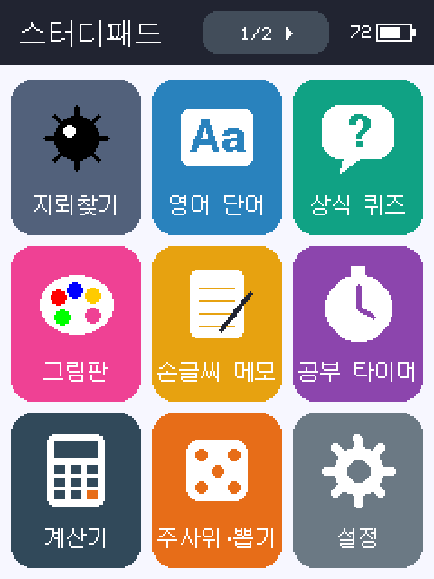
홈 화면 두 쪽에 앱 11개가 있어요. 어느 앱에서든 왼쪽 위 ◀를 누르면 홈으로 돌아와요.
학생용 사이트 (그림 넣은 단계별 안내)
학생들이 직접 따라 하는 자료는 따로 만들어 두었어요. 이 페이지는 선생님이 수업을 준비할 때 보는 정리본입니다.
| 페이지 | 내용 |
|---|---|
| 🏠 스터디패드 만들기 | 소개, 만드는 순서, 앱 미리 보기, 케이스, 준비물, 동아리 약속 |
| 🛠️ 설치·업로드 가이드 | IDE 설치 → 한국어 → 보드 매니저 → 라이브러리 매니저 → 코드 열기 → 포트 → 도구 설정 → 확인 → 업로드 → 터치 보정 (12단계, 단계별 그림, 체크 표시 저장) |
| 📺 설치 가이드 슬라이드 | 같은 12단계를 교실 TV로 함께 보는 36장 슬라이드. ← → 키 · 스와이프 · 단계 바로 가기 · 그림 누르면 크게 |
| 📱 앱 사용법 | 앱 11개, 와이파이 설정, 절전·배터리 |
| ✏️ 코드 고쳐 보기 | 미션 7개: 제목 · 단어 · 퀴즈 · 효과음 · 숫자 · 새 앱 · 시계 꾸미기 |
만드는 순서
- 준비물 · 보드 사기 (터치 있는 제품)-
- 아두이노 IDE · ESP32 3.3.13 · LovyanGFX 설치 (노트북마다 처음 한 번)약 25분
- 코드 열고 도구 메뉴 맞추고 업로드약 20분 (첫 컴파일 포함)
- 터치 보정하고 앱 써 보기약 5분
- 와이파이 넣고 탁상시계 보기약 5분
- 케이스 출력해서 넣기출력 시간 별도
1준비물
| 준비물 | 설명 |
|---|---|
| 2.8인치 ESP32 터치 보드 | ESP32-32E 칩이 든 2.8인치 디스플레이 보드 E32R28T (ST7789 화면, XPT2046 저항막 터치). 알리익스프레스에서 살 때 옵션을 With touch로 골라요. 교탁 도우미 연수의 ES3C28P(ESP32-S3)도 같은 코드로 돼요 → 2-1 |
| USB-C 데이터 케이블 | 충전 전용 케이블은 컴퓨터가 보드를 못 찾아요. 업로드가 안 되면 케이블부터 바꿔요. |
| 노트북 (윈도우 10/11) | 인터넷 · 설치 권한. 학교 PC는 설치 비밀번호가 필요할 수 있어요. |
| 터치펜 | 저항막 터치라 손가락보다 펜이 훨씬 정확해요. 화면 키보드(와이파이 비밀번호)도 펜으로. |
| 배터리 (선택) | 3.7V 리튬폴리머 1셀, 1.25mm 2핀. 케이스에 넣으려면 바닥 30×35mm · 두께 10mm 이하 (예: 603035 600mAh). |
| 스피커 (선택) | 1.25mm 2핀 소형 스피커(29×41×11mm 이하). 있어야 효과음이 나요. |
| 케이스 (선택) | 3D 출력 케이스 + M3×12 렌치볼트 4개 + 2.5mm 육각렌치 → 6. 케이스 |
| 와이파이 (탁상시계 날씨용) | 2.4GHz, 로그인 화면이 없는 와이파이. 학교망이 안 되면 휴대폰 핫스팟. |
보드 핀 (코드 hw.h에 적혀 있음)
| 부품 | 핀 |
|---|---|
| 화면 ST7789 (SPI) | SCK 14 · MOSI 13 · MISO 12 · CS 15 · DC 2 · 백라이트 21 |
| 터치 XPT2046 (소프트웨어 SPI) | CLK 25 · MOSI 32 · MISO 39 · CS 33 · IRQ 36 |
| RGB LED (LOW = 켜짐) | R 22 · G 16 · B 17 |
| 스피커 · 앰프 | 스피커 26 · 앰프 켜기 4 (LOW = 켜짐) |
| 배터리 전압 · BOOT | ADC 34 (1/2 분압으로 보고 ×2) · BOOT 0 |
2설치 · 업로드 요약
학생들은 설치·업로드 가이드의 그림을 보며 12단계를 따라 해요. 선생님이 미리 한 대로 해 보면 막히는 곳을 알 수 있어요.
- 아두이노 IDE 2 설치 · 한국어arduino.cc/en/software → Windows 64bits → JUST DOWNLOAD. 설치 중 드라이버를 묻으면 설치. .
- 보드 매니저: esp32 by Espressif Systems → 3.3.13왼쪽 두 번째 아이콘(Ctrl+Shift+B) →
esp32검색 → 위의 Arduino ESP32 Boards가 아니라 아래 esp32 by Espressif Systems → 버전 칸 3.3.13 → 설치 (5~15분). - 라이브러리 매니저: LovyanGFX세 번째 아이콘(Ctrl+Shift+I) →
LovyanGFX→ LovyanGFX by lovyan03 설치. 라이브러리는 이것 하나뿐이에요. - 코드 열기학생 사이트의
StudyPad.zip(또는 9번 zip의code/StudyPad/)을 압축을 풀고StudyPad.ino더블클릭. 탭 23개가 보이면 성공. 폴더 이름과 .ino 이름은 같아야 해요. - 보드 연결 · 포트장치 관리자 → 포트(COM & LPT)에서 뺐다 꽂으면 사라졌다 생기는 번호(예: COM5, USB-SERIAL CH340).
- 도구 메뉴 세 가지아래 표처럼 맞춰요. 나머지는 처음 값 그대로.
- ✓ 확인 → → 업로드처음 컴파일은 3~10분.
Connecting......에서 멈추면 BOOT를 꾹 누르고 있다가Writing at이 나오면 떼기. - 처음 켜기: 터치 보정빨간 + 의 가운데를 펜으로 꾹 → 삑 → 다음 +. 나중에 다시 하려면 시작 화면이 보이는 동안 BOOT, 또는 설정 → 터치 보정.
| 도구 메뉴 | 값 |
|---|---|
| 보드 | ESP32 Dev Module (S3, C3가 붙지 않은 것) |
| Partition Scheme | Huge APP (3MB No OTA/1MB SPIFFS) — 안 바꾸면 Sketch too big |
| 포트 | 내 보드의 COM 번호 |
2-1. ES3C28P(교탁 도우미 보드)로 만들 때
같은 코드가 교탁 도우미 연수 때 쓴 ES3C28P(ESP32-S3, 정전식 터치) 보드에서도 돌아가요. 도구 메뉴에서 ESP32S3 Dev Module을 고르면 코드가 칩 종류를 보고 그 보드의 화면·터치·소리 설정을 저절로 써요(hw.h → hw_es3c28p.cpp). 코드를 고칠 곳은 없어요.
| 도구 메뉴 | E32R28T | ES3C28P |
|---|---|---|
| 보드 | ESP32 Dev Module | ESP32S3 Dev Module |
| Partition Scheme | Huge APP (3MB No OTA/1MB SPIFFS) — 교탁 도우미 때 고른 Custom이 남아 있으면 partitions.csv: No such file 오류 | |
| USB CDC On Boot | (없음) | Enabled (시리얼 모니터용) |
| Flash Size · PSRAM | 처음 값 | 16MB · OPI PSRAM 그대로 둬도, 처음 값이어도 됨 |
| 달라지는 것 | E32R28T (ESP32) | ES3C28P (ESP32-S3) |
|---|---|---|
| 화면 | ST7789 | ILI9341V (IPS, 반전 켜서 씀) |
| 터치 | XPT2046 저항막 — 처음 켤 때 보정 | FT6336G 정전식 — 보정 없음, 설정의 터치 점검(누른 곳에 점) |
| 소리 | 스피커 핀 PWM | ES8311 오디오 칩(I2S) + 앰프, 뒤에서 도는 작업이 음을 만듦 |
| LED | RGB LED 3핀 | 뒷면 WS2812 1개 |
| 절전에서 깨우기 | 화면 꾹 · BOOT | 화면 꾹 · BOOT. 배터리 부족 깊은 절전도 화면을 누르면 깨어남 |
| 배터리 전압 핀 | 34 | 9 |
2-2. 버전 확인 결과 (2026-11-27, 실제 ESP32 툴체인으로 컴파일)
| 보드 매니저 esp32 | LovyanGFX | 결과 |
|---|---|---|
| 3.3.13 | 1.3.0 (라이브러리 매니저 최신) | ✅ 성공 — 프로그램 2.52MB / 3MB (80%), 전역 변수 67KB |
| 4.0.0 (11/19 출시) | 1.3.0 | ❌ Panel_CVBS.inl: 'dac_ll_digi_enable_dma' was not declared 등 |
| 4.0.0 | develop 브랜치 (11/25) | ✅ 성공 — LovyanGFX 새 버전이 나오면 4.0.0도 쓸 수 있어요 |
| 3.3.13 · ESP32S3 Dev Module | 1.3.0 | ✅ ES3C28P용 성공 — 2.53MB / 3MB (Huge APP, 16MB · OPI PSRAM 설정에서도 성공) |
이미 4.0.0을 설치한 노트북은 보드 매니저에서 버전 칸을 3.3.13으로 바꾸고 설치를 다시 누르면 돼요(제거하지 않아도 됨). IDE가 "업데이트할 수 있어요" 알림을 띄워도 당분간 누르지 않게 안내하세요. 교탁 도우미(ESP32-S3)는 이 오류와 관계없지만, 같은 노트북에서 함께 쓸 거라면 3.3.13 하나로 맞춰 두는 게 편해요.
3앱 한눈에 보기


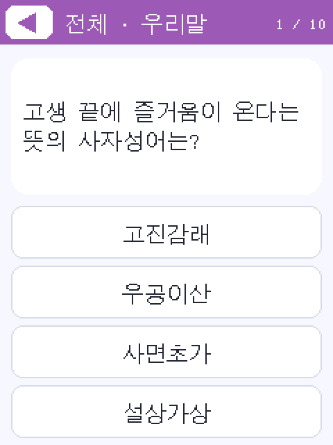
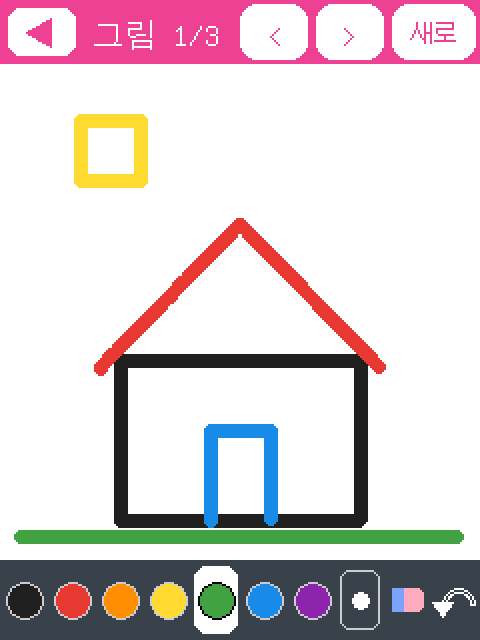


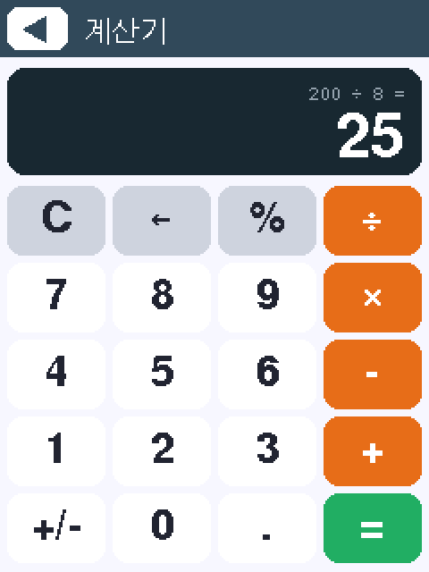

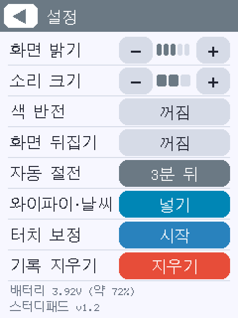
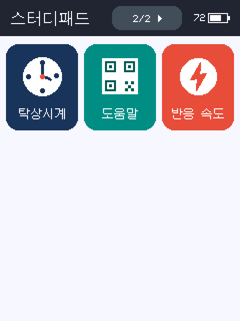
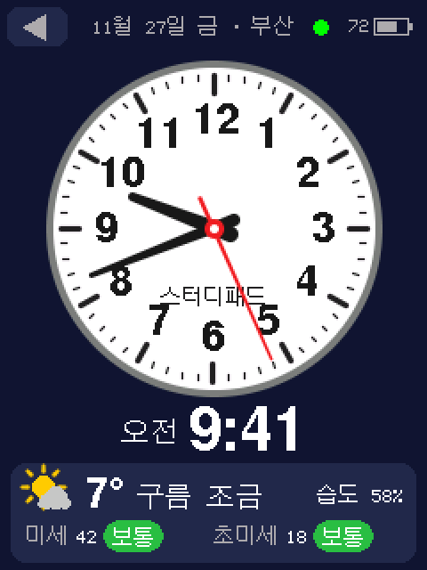
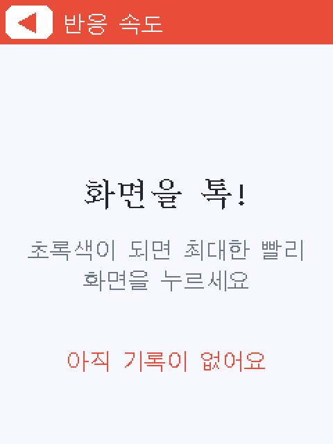
| 앱 | 쓰는 법 · 특징 |
|---|---|
| 💣 지뢰찾기 | 3단계 난이도. 톡 = 열기, 꾹 = 깃발, 숫자 칸을 톡 하면 주변을 한꺼번에 열기. 처음 누른 칸 둘레 3×3에는 지뢰가 없음. 난이도별 최고 기록 저장. |
| 🔤 영어 단어 | 코스: 전체 · 중학 · 고등 · 숙어. 하루 10단어: 익히기 카드 → 테스트 10문제, 8개 이상이면 다음 날로. 그 밖에 카드 학습, 뜻 맞히기, 철자 쓰기(화면 키보드), 오답 노트. 답할 때마다 저장. |
| ❓ 상식 퀴즈 | 6분야 266문제, 모두 2,000문제까지 넣을 수 있게 만듦(QUIZ_MAX). 한 번에 10문제, 해설 포함, 분야별 최고 점수 저장. 학생들이 data_quiz.h에 문제를 더 넣는 미션이 있어요. |
| 🎨 그림판 · 📝 메모 | 7가지 색, 굵기, 지우개, 되돌리기. 그림 3장 · 메모 5쪽 자동 저장(LittleFS). |
| ⏱️ 공부 타이머 | 공부 25분 + 쉬는 5분 번갈아(LED 빨강/초록), 스톱워치. 재는 동안은 자동 절전하지 않음. |
| 🧮 계산기 · 🎲 주사위·뽑기 | 사칙연산·%·부호. 주사위 1~2개, 1~N 번호 뽑기(중복 없이 켜기), 동전. |
| ⚙️ 설정 | 밝기 · 소리 · 색 반전 · 화면 뒤집기 · 자동 절전(끄기/1/3/5/10분) · 와이파이·날씨 · 터치 보정 · 기록 지우기. 배터리 전압 표시. |
| 🕰️ 탁상시계 | → 4. 탁상시계 · 와이파이 |
| ⚡ 반응 속도 | 새 앱 만들기 예제(app_reaction.cpp). apps.h에 한 줄, StudyPad.ino의 APPS[]에 한 줄 넣으면 홈 2쪽에 새 앱이 생겨요. |
4탁상시계 · 날씨 · 미세먼지 · 와이파이
교탁 도우미의 탁상시계·날씨·미세먼지·와이파이 선택 기능을 이 보드(ESP32 클래식, PSRAM 없음)에 맞게 옮겼어요. 화면 모양과 동작은 거의 같아요.
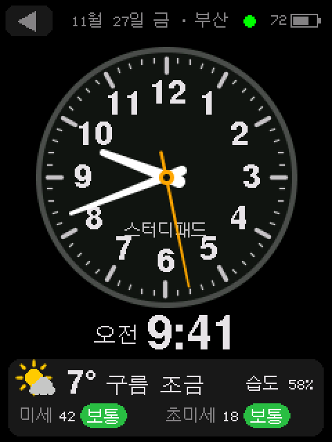
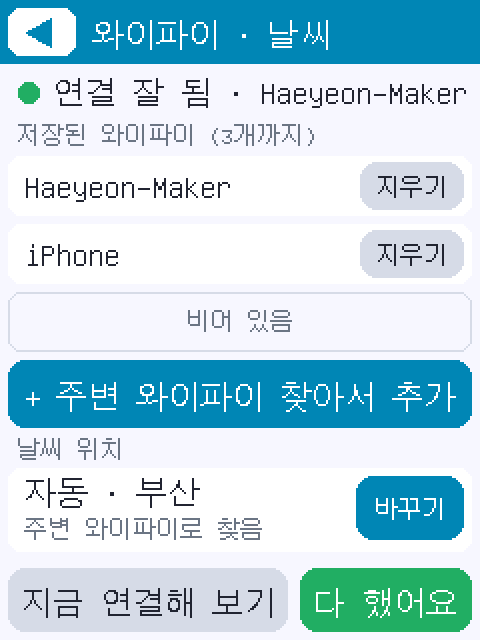
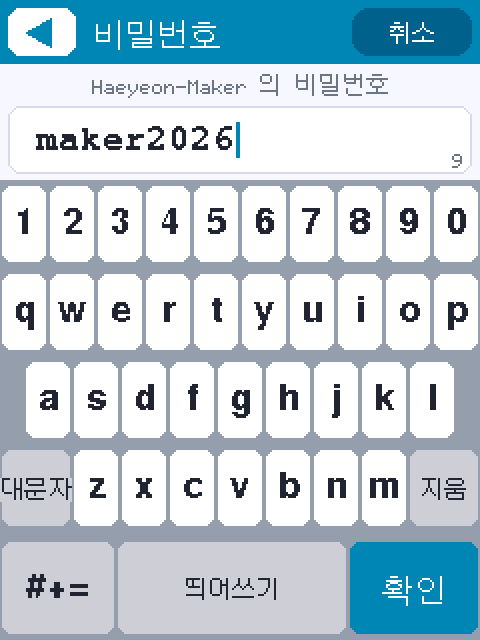
어떻게 움직이나
- 와이파이를 넣어 두면 켤 때 한 번(3초 뒤) + 30분마다 잠깐 붙어서 ① 인터넷 시간(NTP, 막혀 있으면 날씨 서버 시각) ② 위치(자동일 때) ③ 날씨·기온·습도(Open-Meteo) ④ 미세먼지 PM10 · 초미세먼지 PM2.5(Open-Meteo 대기질)를 받고 바로 와이파이를 꺼요.
- 이 일은 0번 코어의 따로 된 작업에서 돌아서, 연결이 오래 걸려도 화면·터치가 멈추지 않아요. 실패하면 2 · 4 · 6 · 8 · 10분 간격으로 다시 해 봐요.
- 와이파이는 3개까지 보드 안(NVS)에 저장하고, 주변에 보이는 것 중 신호 센 것부터 붙어요. 숨긴 와이파이는 . 지우기는 두 번 눌러야 지워져요. '기록 지우기'를 해도 와이파이는 남아요.
- 날씨 위치: 자동 = 주변 공유기 주소·신호 세기로 beaconDB에 물어보고(20km 안쪽으로 맞으면 사용), 안 되면 인터넷 주소(ip-api.com)로 대략. 아니면 도시 17곳 중 직접 고르기. 위치는 하루 한 번 또는 다른 와이파이에 붙었을 때 다시 찾아요.
- 미세먼지 등급은 환경부 기준: 미세먼지 좋음 ~30 · 보통 ~80 · 나쁨 ~150 · 매우나쁨, 초미세먼지 15 · 35 · 75. 모델 예측값이라 에어코리아 측정소 값과 다를 수 있어요.
- 인터넷이 끊겨도 시계는 보드 안 시계로 계속 가고, 날씨는 마지막 값이 남아요(3시간 지나면 흐리게 "○시간 전", 12시간 지나면 숨김).
- 방향 바꾸기(시계 메뉴): 노란 테두리 화면에서 바닥으로 둘 쪽 가장자리를 누르면 그쪽이 아래가 돼요. 세로 · 거꾸로 · 가로 2가지, 모두 4방향. 가로일 때는 시계 왼쪽, 시각·날씨·미세먼지가 오른쪽에 나와요. 고른 방향은 기억되고, 다른 앱은 원래 방향으로 돌아가요.
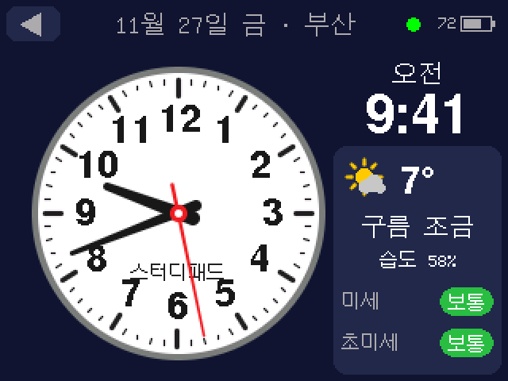
시간 지키기 — 이 보드에는 시계 칩이 없어요
- 30분마다 지금 시간을 보드에 적어 두어요. 전원이 완전히 꺼졌다 켜지면 그 시간부터 다시 가고 위에 "시간 확인 필요"가 떠요. 와이파이가 있으면 몇 초 뒤 저절로 맞고, 없으면 화면을 눌러 .
- 절전(가벼운 절전 · 배터리 부족 깊은 절전) 중에는 보드 안 시계가 계속 가요.
- 탁상시계 화면에서는 자동 절전하지 않아요(충전선 꽂아 두기). 와이파이로 받는 몇 초 동안도 절전하지 않아요.
안 되는 와이파이: 5GHz 전용, 접속할 때 로그인 화면이 뜨는 와이파이(학교 손님망·카페), 아이디를 넣는 와이파이(학교 업무망). 휴대폰 핫스팟으로 먼저 시험해 보세요(아이폰은 '호환성 최대화' 켜기).
실제 보드에서 아직 확인하지 못한 점 — 코드는 ESP32 툴체인으로 컴파일했고 화면은 PC 시뮬레이터로 확인했어요. 실제 보드에서는 ① 시계판 그림판(16비트 74~90KB)이 메모리가 모자라면 8비트로 바꿔 그려 색이 조금 거칠어질 수 있고 ② 와이파이를 켜는 순간 배터리가 약하면 보드가 다시 켜질 수 있어요(충전선 연결 권장). 처음 수업 전에 한 대로 확인해 보세요.
5절전 · 배터리 · 기록
- 자동 절전(처음 값 3분): 15초 전에 화면이 어두워지고, 시간이 되면 화면을 끄고 CPU를 멈춰요(가벼운 절전). 화면을 꾹(0.5초쯤) 누르거나 BOOT를 누르면 하던 화면 그대로 깨어나요. 깨우려고 누른 손가락은 버튼으로 치지 않아요. 터치 칩의 IRQ 선만 믿지 않고 절전 중에도 0.2초마다 아주 잠깐 깨어 화면이 눌렸는지 직접 확인해요(v1.2.1 — 학생 보드에서 터치로 안 깨어나던 문제 수정).
- 배터리 부족(3.45V 아래 30초): 기록을 저장하고 빨간 LED 깜빡임, 설정에 '충전 필요!'. 3.3V 아래면 "배터리가 부족해요" 화면 → 저장 → 깊은 절전. 충전 후 BOOT로 다시 켜요.
- 기록이 남는 것: 단어 진도·오답 노트(답할 때마다), 지뢰찾기·반응 속도 최고 기록, 퀴즈 기록, 설정, 와이파이, 그림·메모(자동 저장), 터치 보정값. 절전 직전에도 앱마다 저장 함수를 불러요(
hwSetSaveHook). - 배터리 전압은 핀 34에서 1/2로 나뉘어 들어온다고 보고 ×2 해요. 보드마다 다를 수 있으니 설정 화면의 전압이 실제(멀티미터)와 다르면
hw.cpp의batteryMilliVolts()를 고쳐요.
6케이스 — 교탁 도우미 케이스가 그대로 맞아요
LCDwiki ES3C28P(교탁 도우미) 교사 연수에서 만든 키링형 케이스가 E32R28T 보드에도 맞아요. 학생용으로는 단색 파일만 넣었어요.


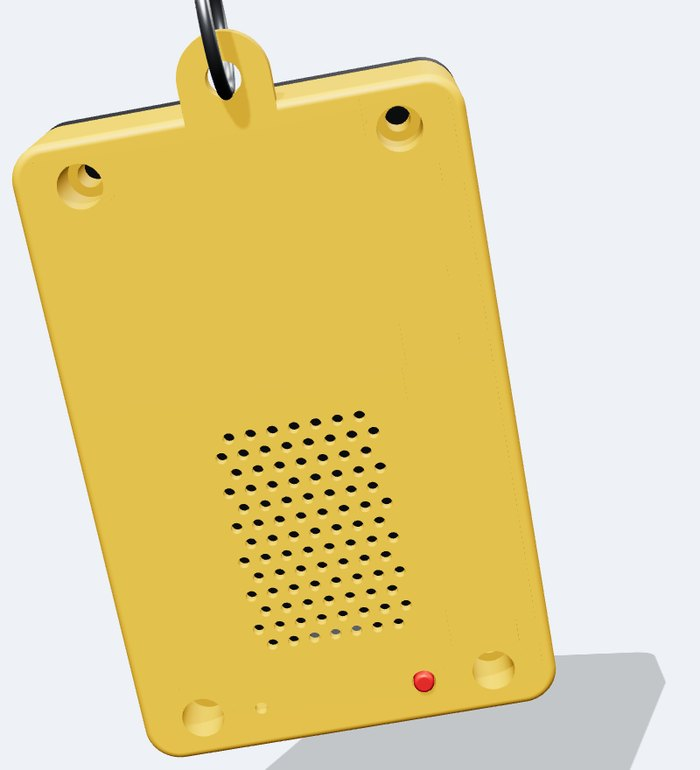
| 항목 | 내용 |
|---|---|
| 파일 | front_bezel · back_shell · back_shell_switch(스위치 구멍) · boot_button(플런저) STL + 조립 안내 |
| 크기 · 출력 | 59.6×90.4×22mm · PETG 또는 PLA · 0.2mm · 벽 3줄 · 채움 20% · 서포트 없이, 파일 방향 그대로 |
| 조립 | ① BOOT 플런저를 뒷 케이스 안쪽에서 끼우기 ② 스피커는 아래, 배터리는 위 포켓에 양면테이프 ③ 커넥터 꽂고 보드를 기둥 4개 위에(USB-C가 아래 구멍 쪽) ④ 앞 베젤 덮고 뒤에서 M3×12 볼트 4개 |
케이스가 보드 뒷면 BOOT 버튼을 누르고 있으면 켤 때 업로드 대기 상태가 되어 화면이 안 켜져요. 볼트는 너무 세게 조이지 말고, 배터리는 + 표시와 빨간 선이 같은 쪽인지 확인한 뒤 꽂아요.
7수업 운영 (동아리 3차시 예시)
| 차시 | 활동 | 자료 |
|---|---|---|
| 1차시 | 보드 소개 · 준비물 확인 → IDE 설치 · 한국어 · 화면 구경 → 보드 매니저(3.3.13) · 라이브러리 매니저. 내려받는 동안 다음 장 설명. | 슬라이드 1~6단계 |
| 2차시 | 코드 열기 → 포트 → 도구 메뉴 세 가지(옆 사람과 확인) → 확인 → 업로드 → 터치 보정 → 앱 써 보기 · 와이파이 넣기 | 슬라이드 7~12단계, 앱 사용법 |
| 3차시 | 코드 고쳐 보기 미션(제목 → 단어 → 퀴즈 → 효과음 → 시계 꾸미기 → 새 앱), 케이스 조립 | 코드 고쳐 보기, 케이스 |
- 교실 TV에는 슬라이드, 학생 노트북에는 설치 가이드를 띄우면 단계 번호가 같아서 함께 짚기 좋아요. 가이드의 "다 했어요" 체크는 그 브라우저에 저장돼요.
- 보드 매니저 설치(5~15분)가 가장 오래 걸려요. 여러 대가 한꺼번에 받으면 학교 인터넷이 느려지니 미리 설치해 둔 노트북이 있으면 좋아요.
- 동아리 약속: 터치펜으로 누르기 · 배터리는 선생님 확인 후 · 고치기 전에 원래 폴더 복사 · 빨간 글자는 맨 처음 error 줄부터 · 보드에 이름 스티커.
- 학생 대상이 아두이노·코드 초보라 바이브코딩 없이 진행하도록 만들었어요. 코드 주석은 모두 한국어이고, 학생이 고치기 좋은 곳(
data_words.h,data_quiz.h,app_clock.cpp의 색 표)은 파일 맨 위 설명에 적어 두었어요.
8문제 해결
컴파일 (✓ 확인)
'dac_ll_digi_enable_dma' was not declared · Panel_CVBS.inl
esp32 4.0.0이 설치됐어요. 보드 매니저에서 버전을 3.3.13으로 바꿔 설치해요. → 2-2
Sketch too big / text section exceeds available space
도구 → Partition Scheme → Huge APP (3MB No OTA/1MB SPIFFS). 와이파이·날씨를 넣으면서 프로그램이 2.52MB라 기본 파티션(1.2MB)에는 안 들어가요.
partitions.csv: No such file or directory (ES3C28P)
교탁 도우미 때 고른 Partition Scheme Custom이 남아 있어요. Huge APP으로 바꿔요. → 2-1
LovyanGFX.hpp: No such file or directory
라이브러리 매니저에서 LovyanGFX를 설치해요.
'C_SCI' was not declared / 지운 파일 이름이 나오는 오류
새 코드를 옛 폴더 위에 덮어써서 옛 파일(예: app_science.cpp)이 남았어요. 아두이노는 폴더 안 .cpp를 모두 컴파일해요. 옛 폴더를 지우고 새로 압축을 풀어요. 그래도 같으면 폴더와 .ino 이름을 둘 다 StudyPad2로 바꿔요.
ESP_EXT1_WAKEUP_ANY_LOW was not declared
보드를 ESP32S3 Dev Module 등으로 잘못 골랐어요. 스터디패드는 ESP32 Dev Module. (교탁 도우미 코드는 반대로 ESP32S3 Dev Module이어야 해요.)
업로드 · 연결
포트 목록이 비어 있음 / 노란 느낌표
① 다른 케이블(충전 전용 아닌 것) ② 다른 USB 단자 ③ 장치 관리자에서 CH340 확인, 없으면 드라이버 설치.
Failed to connect / Connecting......에서 멈춤
포트 번호 확인 → 업로드를 누르고 Connecting이 나올 때 BOOT를 꾹 → Writing이 나오면 떼기. 시리얼 모니터가 열려 있으면 닫기.
A fatal error occurred
도구 → Upload Speed를 115200으로 낮춰요.
쓰는 중
화면이 하얗거나 안 켜짐
RESET 한 번. BOOT를 누른 채로 켜면 업로드 대기 상태라 화면이 안 나와요(케이스가 BOOT를 누르고 있지 않은지 확인).
색이 반전됨 / 빨강·파랑이 바뀜
설정 → 색 반전. 빨강·파랑이 바뀌면 hw.h의 LCD_RGB_ORDER를 true로.
누른 곳과 다른 곳이 눌림
설정 → 터치 보정(펜으로 + 정가운데). 또는 시작 화면이 보이는 동안 BOOT.
와이파이가 "연결 안 됨" · 날씨가 안 나옴
2.4GHz인지, 비밀번호 대소문자, 로그인 화면이 뜨는 와이파이가 아닌지 확인. 설정 → 와이파이·날씨 → . 화면 위 상태 줄에 실패 이유(비밀번호 확인 · 와이파이를 못 찾았어요 · 인터넷 응답 없음)가 나와요. 시리얼 모니터(115200)에도 [인터넷] 줄이 찍혀요.
날씨 위치가 엉뚱한 도시
자동 위치가 인터넷 주소로 대략 찾은 경우(통신사 위치)예요. 와이파이·날씨 → 날씨 위치 → 에서 도시를 직접 골라요.
"시간 확인 필요"가 떠요
전원이 꺼졌다 켜져서 저장해 둔 시간부터 가는 중이에요. 와이파이가 있으면 곧 저절로 맞고, 없으면 화면을 눌러 시간 맞추기.
9파일 받기 · 라이선스
코드와 케이스 STL, 짧은 안내(README)를 한 번에 받습니다. 압축을 풀면 스터디패드/ 폴더 안에 code/StudyPad/와 models/가 있어요.
zip 받기 (코드 v1.2.1 + 케이스 STL, 약 2MB)
코드 파일 안내
| 파일 | 하는 일 |
|---|---|
StudyPad.ino | 홈 화면, 앱 표(APPS[]), 시작 화면 |
hw.h · hw.cpp | 화면·터치·소리·LED·배터리·저장·절전 (하드웨어 공통). 보드는 칩 종류로 저절로 골라짐 |
hw_e32r28t.cpp · hw_es3c28p.cpp | 보드마다 다른 부분: 터치, 소리, LED, 절전 (도구 메뉴의 보드에 맞는 파일만 쓰임) |
ui.h · ui.cpp | 색, 버튼, 글자 줄바꿈, 대화상자 같은 공통 화면 도구 |
apps.h · app_*.cpp | 앱 하나 = 파일 하나 (지뢰찾기, 단어, 퀴즈, 그림판·메모, 타이머, 계산기, 뽑기, 설정, 반응 속도) |
app_clock.cpp · app_wifi.cpp | 탁상시계·날씨·미세먼지, 와이파이·날씨 위치 설정 화면 |
net.h · net.cpp | 와이파이로 시간·날씨·위치 받기(뒤에서 따로 도는 작업), 보드 안 시계 |
data_words.h · data_quiz.h | ✏️ 영어 단어 1,664개 · 상식 퀴즈 266문제 — 학생들이 고치기 좋은 곳 |
사용한 외부 자료와 라이선스
| 자료 | 쓰인 곳 | 라이선스·조건 |
|---|---|---|
| LovyanGFX (한글 글꼴 efont 포함) | 화면 그리기, 한글 글꼴 | FreeBSD (글꼴은 각 원 라이선스) |
| Arduino-ESP32 (WiFi, HTTPClient, Preferences, LittleFS) | 와이파이·인터넷·저장 | LGPL 2.1 / Apache-2.0 |
| Open-Meteo | 날씨, 미세먼지(CAMS 예측) | 데이터 CC BY 4.0 · 비상업 무료 |
| beaconDB | 주변 와이파이로 위치 찾기 | 공개 서비스 (공유기 주소와 신호 세기만 보냄) |
| ip-api.com | 인터넷 주소로 대략 위치 찾기 | 비상업 무료 |
탁상시계·날씨 코드는 이 사이트의 교탁 도우미 코드를 ESP32 클래식 보드에 맞게 옮긴 것이에요.